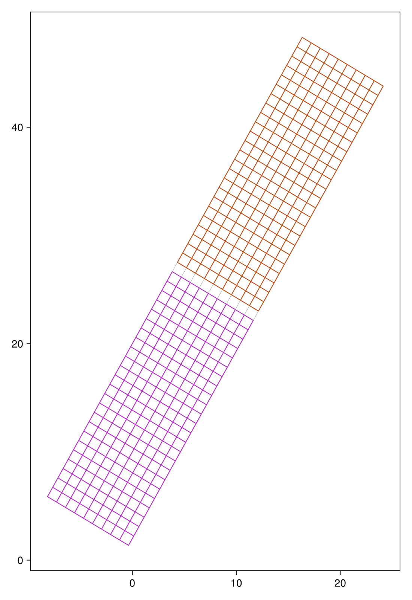

Quick start
This example shows the basic workflow in GraphLab.jl:
- build a small geometric graph,
- partition it,
- evaluate the partition,
- visualize the result.
We use a small graph so that the example remains easy to read.
using GraphLabBuild a graph
We first generate a small grid-like graph. The matrix A stores the graph adjacency structure, while coords stores the vertex coordinates.
A, coords = GraphLab.grid_graph(10, 50, π / 3);Compute a partition
We now compute a spectral bisection of the graph.
p = GraphLab.part_spectral(A);Evaluate the partition
We measure the edge cut and the balance of the partition.
edge_cut = GraphLab.count_edge_cut(A, p)
balance = GraphLab.compute_partition_balance(p)
(edge_cut=edge_cut, balance=balance)(edge_cut = 10, balance = 1.0)Visualize the partition
The vertices are colored according to the partition vector p.
GraphLab.draw_graph(A, coords, p)
This page was generated using Literate.jl.